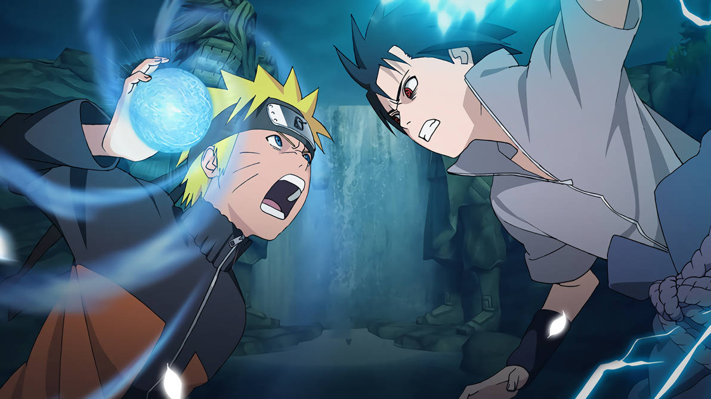
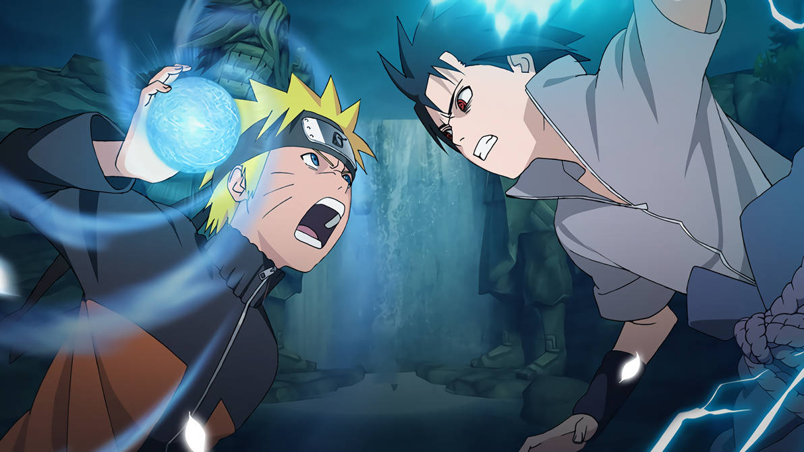
Naruto e Sasuke são a principal base da obra de Masashi Kishimoto. Enquanto a construção de sua amizade ao longo da fase clássica é parte fundamental da jornada do protagonista, sua separação é tão significativa que marca o fim dessa primeira parte. Sua relação conturbada, mesmo enquanto distante, não deixa de ter grande peso no crescimento e desenvolvimento do personagem principal, com suas tentativas de encontrar seu amigo e trazê-lo de volta a um caminho melhor se tornando parte principal de sua motivação.
 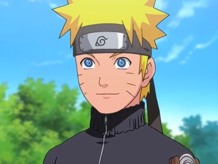
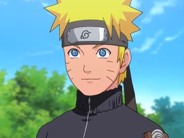
Naruto Uzumaki é um personagem fictício da franquia de mangá e anime Naruto, criada por Masashi Kishimoto. Servindo como o protagonista homônimo da série, ele é um jovem ninja da vila fictícia de Konohagakure. Os aldeões de sua vila o desprezavam por causa da Raposa de Nove Caudas que foi selada em seu corpo.
 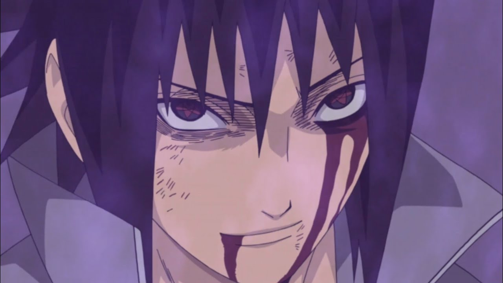
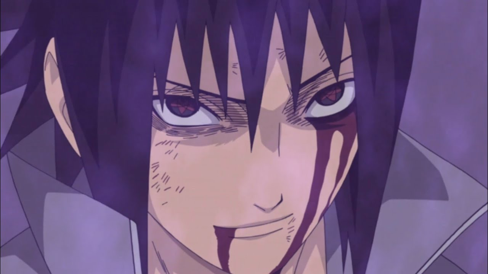
Sasuke Uchiha é um personagem fictício da série de anime e mangá Naruto criado por Masashi Kishimoto. Na história fictícia da série, Sasuke é membro do clã Uchiha, que era uma habilidosa família de ninjas da Vila Oculta da Folha. Sasuke é o filho mais novo de Fugaku e Mikoto Uchiha, além de ser o último sobrevivente do clã em Konoha quando a série começa. Após o trágico massacre de sua família quando ele era uma criança pequena, o garoto se tornou frio e distante, tendo como seu único objetivo vingança contra aquele que matou todo o seu clã.
 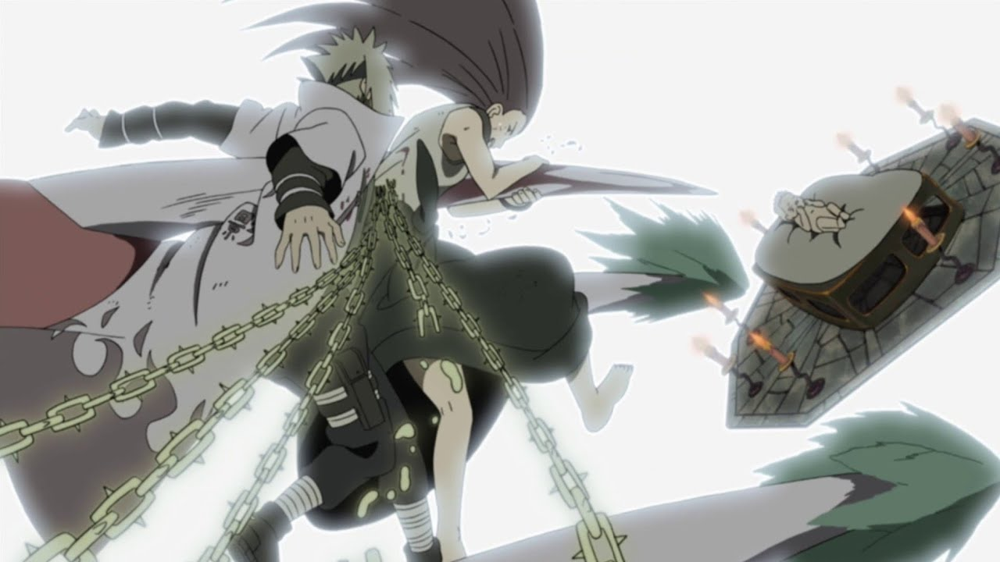
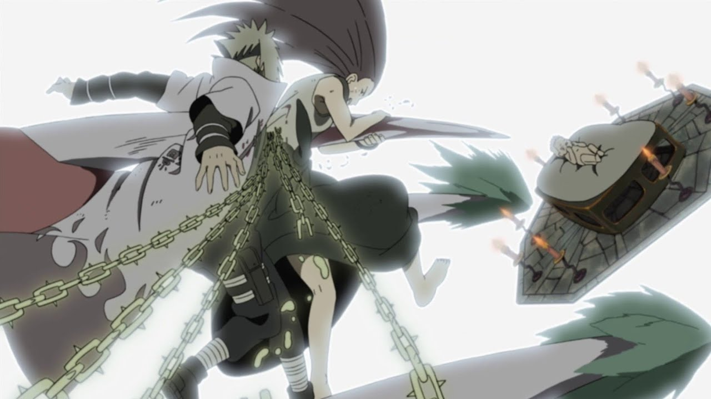
Naruto é um órfão que, quando era um recém-nascido, teve um monstro conhecido como a Raposa de Nove Caudas selada dentro de seu corpo pelo seu pai, o Quarto Hokage, Minato Namikaze, o líder da força ninja do País do Fogo, ao custo de sua própria vida.
 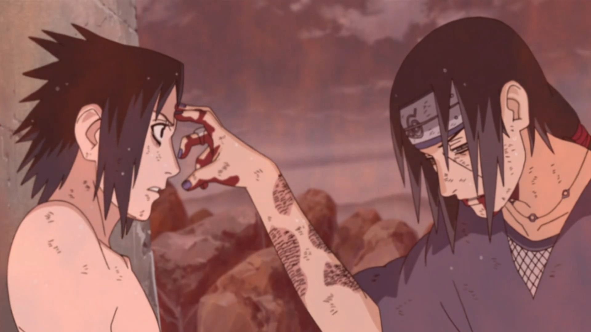
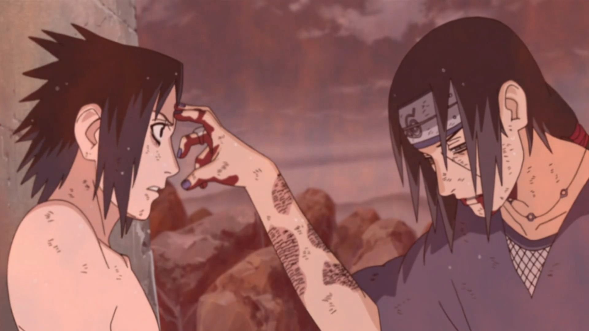
Durante o Exame Chunnin, um exame de graduação ninja, Sasuke encontra Orochimaru, que o manipula e insere nele o selo amaldiçoado, que lhe concede um breve momento de força e velocidade enquanto ativo e que em um nível mais avançado muda drasticamente sua aparência. Kakashi Hatake lhe ensina o Chidori, um conjunto de relâmpagos feitos de chakra e manipulados por sua mão, que lhe serve como um modo de evitar o uso contínuo do selo amaldiçoado, que poderia prejudicá-lo. No entanto, após o breve retorno de Itachi a Vila da Folha e a sua derrota imediata, Sasuke torna-se insatisfeito com o que ele aprendeu como membro do Time 7. Acreditando que Orochimaru seja capaz de lhe dar o poder necessário para matar seu irmão, ele o procura, rompendo seus laços de amizade com o povo da vila. Naruto segue-o em uma tentativa de impedi-lo, e os dois se confrontam. Embora durante a luta tivesse a oportunidade de matá-lo, Sasuke hesita em fazê-lo, e ao invés disso continua a caminho do esconderijo de Orochimaru. Após dois anos e meio, convencido de que aprendeu tudo o que precisava com seu novo mestre, Sasuke volta-se contra um Orochimaru enfraquecido antes que o mesmo roube seu corpo. Apesar dele tentar tomar seu corpo à força, Sasuke é capaz de reverter o processo, e absorvê-lo. O personagem forma sua própria equipe, "Hebi", para auxilá-lo na busca por Itachi. Quando eles conseguem encontrá-lo, Sasuke o enfrenta sozinho. Durante o confronto, antes de morrer, Itachi remove do corpo de Sasuke o selo amaldiçoado e Orochimaru. Após a batalha, ele é capturado por Tobi, que revela que Itachi só assassinou seu clã, pois estava sob ordens dos comandantes da Vila da Folha e que o poupo por amor e que, posteriormente, permitiu que ele o matasse
Naruto é visto por muitas pessoas como um monstro, não só pelos familiares das pessoas mortas pela Kyuubi, mas também por pessoas que não toleram suas brincadeiras, já que o mesmo é extremamente hiperativo, incompreendido e solitário. Naruto sonha em se tornar o Hokage de sua vila, um ninja poderoso e respeitado, para assim poder ser reconhecido por todos.Ele entra na academia ninja, onde sofre com as notas baixas, mas é ajudado por seu professor, Iruka Umino, que posteriormente se torna seu amigo. Consegue finalmente se tornar Gennin, e a partir daí passa a ser ensinado por um Jounin, Kakashi Hatake, e forma uma equipe com Sasuke Uchiha (que no começo não se dão bem) e Sakura Haruno, sua grande paixão.
 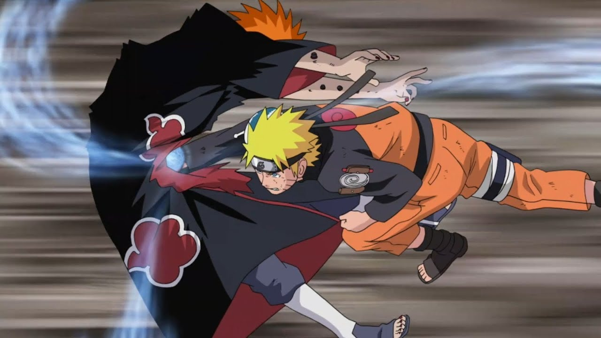
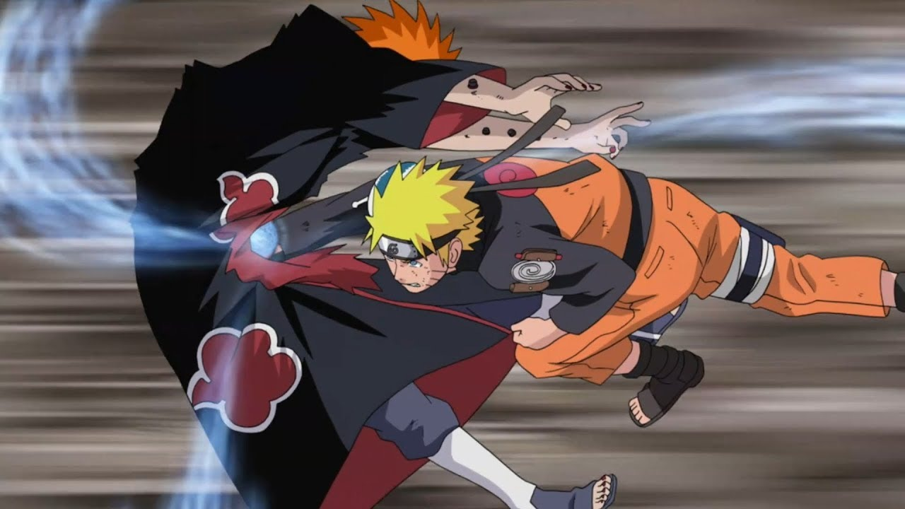
Após seus dois anos e meio de treinamento, Naruto retorna para a sua vila e começa a lidar de forma mais ativa a ameaça Akatsuki salvando Gaara de suas garras.Para combatê-los, Naruto treina com Kakashi para infundir o Rasengan com o seu próprio elemento Vento de chakra, criando o ataque Rasen-Shuriken que foi fundamental para a queda do membro da Akatsuki Kakuzu.Apesar de ser alvo da Akatsuki, Naruto se dedica a encontrar e recuperar Sasuke quando ele finalmente segue Orochimaru e começa a agir sobre os seus caprichos orientado por vingança. Ao longo do tempo, embora resistindo à vontade de usar o poder da criatura, a influência do Nove Caudas sobre ele expande-se ao ponto onde ele começa a perder sua racionalidade quando o seu chakra manifesta a forma de caudas chegando ao ponto do Naruto ficar furioso e o Bijuu assumir o controle de seu corpo ocasionando à destruição de tudo no seu caminho.Depois de saber que Jiraiya foi morto pelo líder da Akatsuki, Pain, Naruto se prepara para o seu encontro, aprendendo o Senjutsu tipo sapo, uma habilidade de reforçar o poder que envolve a coleta de energia natural. Quando eles finalmente se enfrentam, Naruto derrota Pain e o convence a parar a Akatsuki. Naquela hora, Naruto descobre que o quarto Hokage foi seu pai, e que selou a Raposa para que Naruto pudesse usá-lo para derrotar o fundador da Akatsuki Tobi que estava por trás do ataque da Raposa no País do Fogo.